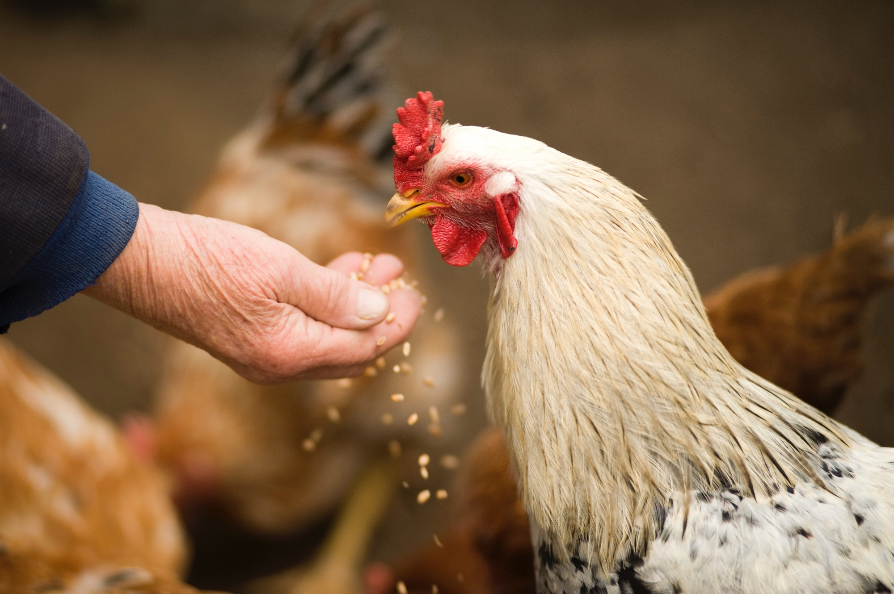

There are more than 3,000 species of snakes on the planet and they’re found everywhere except in Antarctica, Iceland,
Ireland, Greenland, and New Zealand. About 600 species are venomous, and only about
200—seven percent—are able to kill or significantly wound a human.
Nonvenomous snakes, which range from harmless garter snakes to the not-so-harmless python,
dispatch their victims by swallowing them alive or constricting them to death. Whether they kill
by striking with venom or squeezing, nearly all snakes eat their food whole, in sometimes astoundingly large portions.
How snakes hunt
Snakes also have forked tongues, which they flick in different directions to smell their surroundings. That lets
them know when danger—or food—is nearby.
Snakes have several other ways to detect a snack. Openings called pit holes in front of
their eyes sense the heat given off by warm-blooded prey. And bones in their lower jaws pick up vibrations from rodents
and other scurrying animals. When they do capture prey, snakes can eat animals up to three times bigger than their head is wide
because their lower jaws unhinge from their upper jaws. Once in a snake’s mouth, the prey is held in place by teeth that face inward, trapping it there.